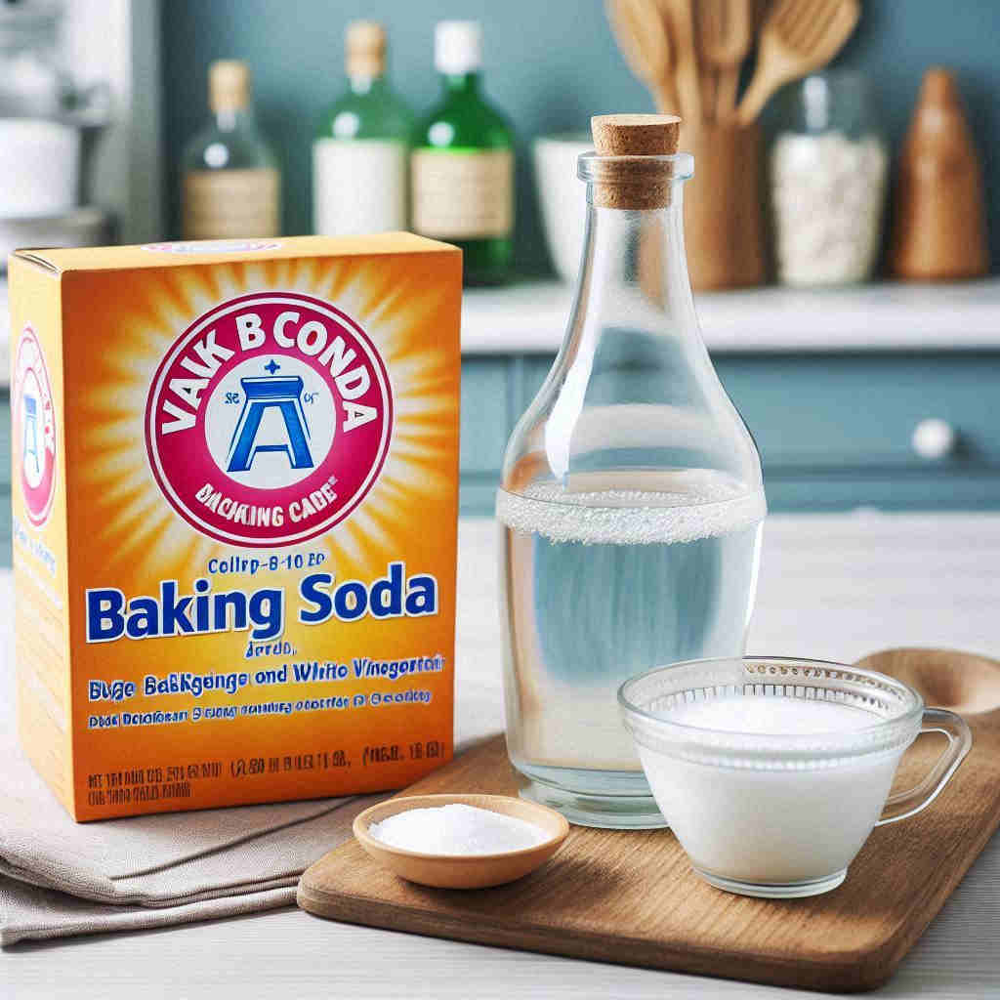
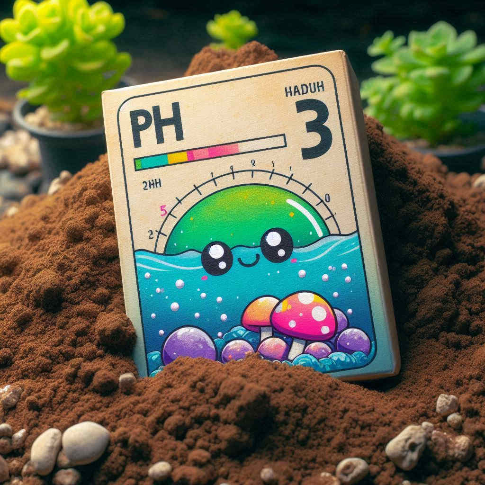

Receta medir pH en suelos de forma sencilla

De forma casera solo con vinagre y bicarbonato
Ingredientes:
- Muestra de suelo
- Agua limpia
- Vinagre blanco
- Bicarbonato de sodio
- Recipiente pequeño (taza, plato)
- Cuchara cafetera

Procedimiento:
- Recolecta: Toma una pequeña muestra de tierra de diferentes partes de tu jardín.
- Humedece: Agrega un poco de agua a cada muestra hasta formar una pasta.
- Prueba con vinagre: En un recipiente, mezcla una porción de la pasta de suelo con un poco de vinagre.
- Si burbujea: Tu suelo es alcalino (pH alto).
- Prueba con bicarbonato: Si no hubo burbujas en el paso anterior, mezcla otra porción de la pasta de suelo con un poco de bicarbonato.
- Si burbujea: Tu suelo es ácido (pH bajo).
- Si no burbujea: Tu suelo podría ser neutro.
Resultado:
- Burbujeo con vinagre: Suelo alcalino (ideal para ciertas plantas como la lavanda). Revisa el tutorial: Corregir pH de suelo en la sección de suelo alcalino
- Burbujeo con bicarbonato: Suelo ácido (ideal para plantas como las azaleas).Revisa el tutorial: Corregir pH de suelo en la sección de suelo ácido
- Sin burbujeo en ninguna prueba: Suelo posiblemente neutro.
Nota: Este método es una estimación rápida. Para resultados más precisos, utiliza un kit de pH para suelo. Revisa el tutorial: Medir pH de suelo con kit (tiras reactivas)